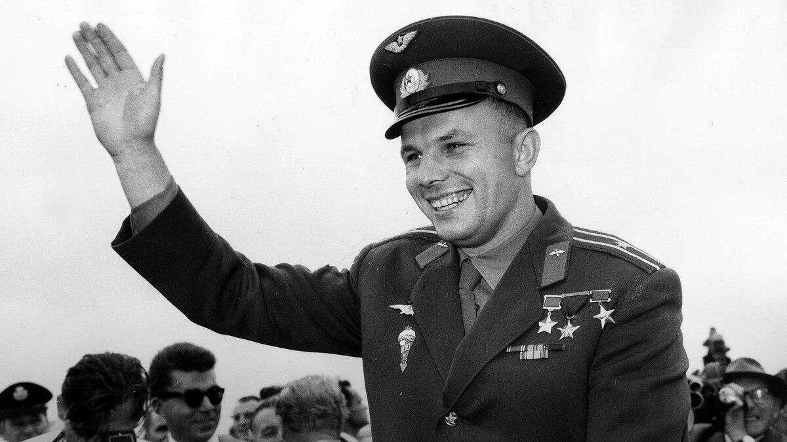

Юрий Гагарин — первый человек в космосе

108 минут, изменившие мир
Хронология первого полёта человека в космос - 12 апреля 1961 года
Старт
09:07 по московскому времени
Отделение
Отделение первой ступени
Выход на орбиту
Начало невесомости
Облёт Земли
Космический корабль "Восток-1"
Приземление
10:55 мск, около Энгельса
“
Облетев Землю на корабле-спутнике, я увидел, как прекрасна наша планета. Люди, будем хранить и приумножать эту красоту, а не разрушать её!
”